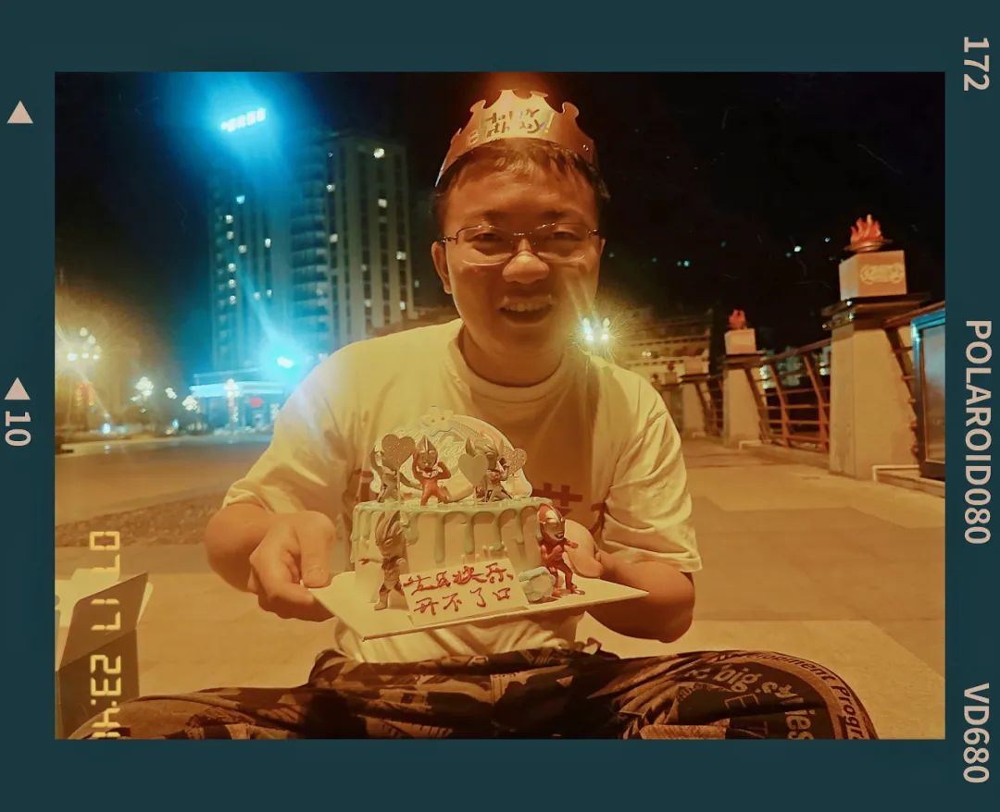

升降机送上一桶水泥
节奏把握得刚刚好
这里发展得太快了
以至于我们都找不到上次见面的地方

今年没有拍太多的图。相反，今年是最近几年以来最少拿起相机的时候。总觉得好像拿起相机，如果今天的自己和昨天没有什么区别，那么我算什么？我好像一个影楼里的快门工，永远在相同的摄影棚里拍照。尽管我手上有几盏灯，但我并不太思考他们之间的关系；每当我接到了一个新的客户，总是只作很小的改变，然后把他们往我熟识的流派上去指引。好似一个航海海员，每次远行的时候都往西边走；好似一位公交车司机，每次都驾驶311路，从湘雅附二开往中南大学。摄影，有时候是我的社交工具，更多时候是我开眼看世界的桥梁。桥梁，通行载体，寓意着我经由此通往不同区域。桥梁是方法论。倘若没有放眼望去的动作，我宁可不拍。于是今年拍得很少。有些图是我一眼看过去就知道，这张图是一年中绝传的好图。而另一些，他们也许并没有太多色彩和构图的美学、也没有很多故事内核，但他们构成了我生活的很大一部分。最典型的，就是我在十二个月份过后的跨月份纪念音乐现场，用摄影来表达音乐，并不是普遍做法。最重要的是，我做不到一边沉浸在音乐中，一边理性地操作手上的器械，我做不到那么人机合一。这也引申出来一个限制：我的照片中那些年度最佳，通常都是把情绪温在图之下，而不是泛滥其上。我希望我的图，任意摘出来一张，过很多年后我都能很自然地说出来这是在哪里、前因后果，我拍下这张图时我是谁、我的心情怎样，因为这张图我和谁有怎样的联结。私以为，借由一张实物载体的图来观察这个世界，这和社会科学的调研、和自然科学的发现，从我的认知角度来说，没有什么分别。苦恼就在社会科学我可以循着前人书本里的足迹和与人的交谈，自然科学我完全有条件自己上手做实验，但摄影一方面我没有那么多上升的实证渠道可以选择，另一方面有些怕这个爱好让我担负起来太用力。今年拍得很少，少之又少。但，今年的成片量不低。去年因为我实在选不出来了到底该删哪些、不该删哪些，所以用了一个取巧的组图的方式来达到目的。虽然没必要踩死了就是百张，多一点少一点反正是我自己的号，有什么关系呢？这是我的年终总结诶拜托。还是得交代一下。今年的100图里有20张是组图，另外有80张是单张。尽量控制了一下比例，以免真的造成太大的阅读压力。我敢说，每年的100图相对我写的其它而言，一定是当年最有读者意识，阅读起来完成度最高的篇目。一月出门给老妈拍艺术照。在长沙浏阳河东岸的一处山坡。拍了一会，发现艺术生的画板盒子（姑且被我叫一个这么前后不搭调的名字）实在是很好看。而且那会我的思想包袱还很新，拍出来也很好看。于是有了这张。那会儿，《漠河舞厅》的歌还正在劲儿上。和我哥也计划去一趟漠河。谁不向往呢？那会儿我的南方航空畅游中国都还在有效期内。人间开心。
从满洲里走呢？还是从大庆走呢？满洲里、呼伦贝尔、海拉尔、牙克石，那样我们就可以坐大兴安岭的开窗小火车深入满归，去到大兴安岭的腹地。还是走哈尔滨，那里有我在敦煌旅行认识的好朋友只踢不说，他对很多文化史的东西都有兴趣而且有研究。坐雪国列车，从哈尔滨去漠河，看一看有极光的村落。
可惜，这一趟没有如愿成行。现在依然遗憾。

镜中书店。任何一个读过张枣的人，都知道这是为什么。这张图就像那首诗一样。而且，张枣是长沙人。
这家书店在岳麓山后山，茶场村的半山腰。我总是分不清茶场村和茶厂村，当地的老百姓似乎也没有严格地对此置以评论。
雪，谢客。
那就去没有闭门的地方吧。橘子洲，乐之书店。朋友们好像明白了如何跟我约拍。平素我会拒绝绝大部分约拍，但是几乎不会拒绝以生日为由的约拍。我已经见证了学妹变换了很多微信名称，我们姑且用正在进行时&上善若水来指代。
&上善若水这件红装很搭乐之书店。书店原为美孚洋行，歇山屋顶，盖大红瓦，红砖清水墙。内饰作墨绿，学妹的生日在每年的正月初头。这张照片也不是我按动的快门，是我在旁边布灯看位，&上善若水老弟捕捉到的瞬间。后来成了她很长时间的头像，应邀入篇。
二月就真的过年咯。过年怎么能没有这道年羹肉呢？每年过年只有吃到扣肉或者肘子了，我才感觉像是到了过年。没有吃到，那就是没过年。
宕开一笔让我想起了昨天问新加坡本地的一家我很喜欢去吃的湘菜店，今年有没有肘子？回复说没有。我现在还没有寻思着一个合适的方式来。
又宕开一笔说庚子到辛丑年的新年，我在UTown定了烧腊。让店家给我写了一个回执，回执上写的让我永远记得：

过年那几天格外流行加特林，不知道为什么就很火。和豆一岚一起，我们只敢在江边放，于是在北辰三角洲玩起了光绘。
非常好，我就知道正常人都猜不出来我画的是什么(不然考虑看一下公众号的名字？但是似乎得到的反馈有一些跟我一样哈士奇瞪大眼睛的喜感根据一个长沙艺文活动公众号提供的线索，从穿石坡湖附近的林场工人小路走上了岳麓山。在一片山茶林帮老妈拍了一张后来应用广泛的艺术正照(实际上是因为一月二号那天拍的不满意
三月是精彩的。精彩的倒春寒倒出来了今年的第一张五分之一年度最佳。那天我刚和钮阿芝先生从岳麓山拍雪下来，准备在五一广场吃个饭然后去万达大事件打剧本杀。在7 Mall地铁口遇到Jiaxin smile，受邀拍下这一张迎风雪。
没几天天气就晴朗了起来。所以我们也去放风筝。但最喜欢的活动还是去打剧本杀，因为最暖和。万达大事件，我们的好据点。在这个房间里打过很多次剧本。笑，又想起我组的局里大家从最开始还有些腼腆，到杀起来之后放飞自我。可能就是有一些开会讨论说来说去交流的爱好吧(笑我的初中室友，豆，和二月提到的那位同nickname，过生日。我们本来约着出去吃饭。吃完了，他说不过瘾。我，那走走？他，好，走走。走过一家宠物店门口，他说，我觉得那里面好像地狱。我想去买一只鹦鹉，不能说买吧，就好像是换那种赎罪券。我感觉我像是要去救赎一只鹦鹉出来。然后就有了这张图。他给鹦鹉取名叫泺淯，大抵是谐音长沙话里下雨的意思。他晚上又一场民谣音乐现场要去，他在犹豫是先把鹦鹉送回家，还是去现场宠物朋克。我们决定先去吃点臭干子，也就是方便外地人理解的臭豆腐。几张邻座都时不时有人来跟他支招，诸如养鸟要养一对，要罩布不要吓到鸟，之类。可能他们都觉得自己讲话声音跟那树上的画眉鸟一样好听吧。 和懂火烫的好朋友去五条人常常在歌里唱着的足疗馆。小时候我总是笑大人用乌漆嘛黑的脏水洗脚，那岂不是越洗越脏。现在高低已经是足浴按摩加吃饭加私影了。粉和煲汤做得也还真的不错，我先后看完了海绵宝宝大电影、怪兽电力公司和绯色的子弹。图摄由山林小粒儿，出镜为钮阿芝先生和我。值得一提的是，我们是在足疗店换装，我手上拿的就是身前饮料杯中的吸管。我们宣称，并未有一丝烟叶在本照片的拍摄中受到灼伤，也已经预先用表演模板通知了拍摄人手势可能带有的其它含义。我们去小豆岛。豆老师笑说，这是她的岛。或许是一块自留地。这家店是新开的。巧的是我们在现场请人帮忙拍图，找到的人竟然是前几天跟我一起听live的朋友；在朋友圈夸这个咸奶油富士山很好吃，结果发现是我之前吃过的长沙另一家小食店的店主和朋友合伙在这开发的(说忐忑了很久要不要用自己私藏的中古盘来装因为那天店里的盘子不够了
和懂火烫的好朋友去五条人常常在歌里唱着的足疗馆。小时候我总是笑大人用乌漆嘛黑的脏水洗脚，那岂不是越洗越脏。现在高低已经是足浴按摩加吃饭加私影了。粉和煲汤做得也还真的不错，我先后看完了海绵宝宝大电影、怪兽电力公司和绯色的子弹。图摄由山林小粒儿，出镜为钮阿芝先生和我。值得一提的是，我们是在足疗店换装，我手上拿的就是身前饮料杯中的吸管。我们宣称，并未有一丝烟叶在本照片的拍摄中受到灼伤，也已经预先用表演模板通知了拍摄人手势可能带有的其它含义。我们去小豆岛。豆老师笑说，这是她的岛。或许是一块自留地。这家店是新开的。巧的是我们在现场请人帮忙拍图，找到的人竟然是前几天跟我一起听live的朋友；在朋友圈夸这个咸奶油富士山很好吃，结果发现是我之前吃过的长沙另一家小食店的店主和朋友合伙在这开发的(说忐忑了很久要不要用自己私藏的中古盘来装因为那天店里的盘子不够了
春暖花开，哪个长沙人能少得了去省植物园。拍过樱花。后来我有打印一些照片作为明信片。随机拿一些然后送给别人。这张是经挑出来，老法师们最喜欢的照片。然后也跟爸妈一起去长沙最靠近湘潭的地方看向日葵。手机上已经接到了湘潭的短信，那段时间湘潭还有些紧张。虽然现在疫情从管理上来说是过去式了，但在当时仍然是一件了不得的事。有空再说疫情带给人的印象吧，现在多少可以先看看花。
地菜 鸡蛋 红枣 枫球 枫藤 金银花藤 黄豆 甘草 老姜反正每年外婆都要筛上一海碗来。各种节日在我，就是味蕾记忆。遥想辛丑年农历三月在新加坡，都不知道怎么跟人描述，什么叫枫球。很多人经历了不太友好的事。当然经历了好的事的人，我们一般不知道。于是很多人来找我要转运的锦鲤。我就专门去拍了些锦鲤。
和山林小粒儿、钮阿芝一起自驾湘西。从娄底紫鹊界，到隆回、通道，到洪江、吉首，到边城和芙蓉镇，一路上都很精彩。我没有严格按照时间线来整理，只因为一路都实在很好看也很漂亮。草长莺飞的日子，行经湘西大山中。出镜即是我的这两位好朋友，视觉设计来自钮阿芝先生的华为手机。上图左，在洪江古商城，出镜为我的两位伙伴。中图两幅均在清江，右图在芋头镇。这是一座侗寨，其中坐着的老妪不知道在眺望着想些什么。她坐的地方叫鼓楼，一般是攒尖葫芦顶，底层是正方形；鼓楼以一雷公柱登顶，配有四衬柱、十二檐柱，即一年四季十二月，用以为集会议事的公共场所。
洪江印刷社，年度五佳之二。我在几乎各个场合都推荐这张图，因为实在是要什么有什么。
时间，入夜，因为点亮了灯；地点，洪江印刷社，只要你认识中文；人物，两位路人、行人。所以就是在傍晚时分，洪江印刷社前，两位路人行色匆匆地走去。天有些下雨，但不大，所以路人形展现出了很自然的手势；地面的青石砖反馈着光影，墙体延伸入拐角，引领路人身体的自然方向。褪色红与暖黄，古城青墨。
我只是站在高处用长焦抓下了这一景，一切都很凑巧，谁也不知道他们会这样序贯走过。扫街能出图的都是靠天收。湘西，清丽山水。来到花垣茶峒，也就是沈从文笔下的边城。我们在湖南这一侧晃荡了些，就坐在江边看人用捣衣木槌洗衣服。看着也不觉得有时间流驶。有船靠岸，我们也登船去。听船夫说了会儿附近的典故种种，哪里是国务院划定的分界点，自己的一生命运如何。一条清水江多少事，这不似长江上的临江仙，而多是个人自己在称道生命的开心。
也许横版还不能那么觉察出来这张照片的精妙之处。须知，我后来所印的摄影集，这张是封面照。穿行在湘西的大山中，多的是绝妙的体验。坐上可以开窗户的绿皮火车在武陵源大山里穿过，拍下一张矮寨大桥；当你点了一份葱煎蛋，而老板提着一把刀去了菜地，这是我吃过最好吃的葱煎蛋；当你坐在国家地质公园、自然保护区里，你吃一半、风吃一半，餐茶是刚从山上背下来的泉水冲出的；当，无人机升起，梯田纵深尽收眼底。从石门县北坐火车回长沙。三湘四水，四水即湘资沅澧，尽在这条线上。我离自然的美景也明明很近嘛。
回长沙后不久，就重新开始健身了。
我在健身房看吃播，引起了公愤（但是没人指责我在椭圆机看书

在长沙很久，所以就开始在各种情形之下薅羊毛。比如，我可以不看手表地准确估计一段18-19分钟的时间，只因为每20分钟共享小电驴就跳表一次。

老朋友Amber来长沙。Amber是2019年年度100图中五佳之一的主角。那是一张在我们在天台的照片。于是Amber这次来长沙，我也选了一处天台，正对长沙湘江一桥和橘子洲-岳麓山天际线。在天台看日落、听歌。
突然接到了通知，说可以返校毕业典礼。了结武汉2020级大学毕业生的遗憾。现校长尤政为我拨穗和颁发证书。我实际毕业证书上的校长，现党委书记李元元，前来拥抱。毕业典礼圆满。我的好朋友们也很圆满。见到了以前的组织伙伴、饭搭子ki哦和Mr.DT（图由赎和たい拍下）；见到了很多的师门兄弟姐妹，见到了很多一组图也放不下的老师和朋友；还会在校园里走着走着，就突然被路上经过的人叫住，那种感觉就像以前返校还拖着箱子在手上呢就被路人问路一样I am superpower of the campus；见到了在球队里打球的老伙计赤赤，这一样过来，我没有什么遗憾了。再到西十二教学楼。以前我返校，还觉得自己好像没有毕业一样指指点点，现在终于是一个毕业生的感觉了。原来这是毕业。跟还能叫出我名字的两位楼栋阿姨说“这次我离开了，就是真的毕业咯。”底下这张并不是我拍的。但很有意思，看起来我的状态就像是回到了大二时候一样开朗，即使彼时我已经博二了。为这张很青春的模样，邀请入选今年的年度前五。我以前也带队打球。我技术一般，但就是喜欢搞气氛并且带大家出去玩。回网前吧。排球男网高两米四三，高低能看出我的身高了。
值得一提的事，我现在组里有个土耳其姐姐。她跟我说华科的这个土耳其烤肉饭看起来至少不是土耳其的样式。可恶，看来被欺骗三年有半。但是这份饭当时确实无数次救我于危难间，正餐西一没有的时候，就只有没有花样的紫菘美食屋和聪明的小吃城还开着。摄影师山外小楼夜听雨，虽然我们第一次见，但是朋友圈已经显然地交叉重叠了一波又一波。合影的好兄弟Yingtao，是从我科年代开始就一起打天下的铁子。
我们在都正街上扮演了一对门神：尉迟恭和秦叔宝，就像在搞科学年代里一起合作扛大旗的样子。铁子说要来长沙很久了。不就，我们就进入了间隔一整个太平洋的模式。
七月的后来也精彩极了。就像五月的健身紧跟四月的旅游，七月的毕业旅行也紧跟六月的毕业典礼。
从长沙飞成都。离开重庆大足后，夜宿绵阳，次日在广元的剑阁县开始爬剑门关的猿猱道。复道青城山休息。大雾夜晚翻到四姑娘山。进入高海拔地区。
在小金县休息。途经中路藏寨。切路惠远寺。荐。
从道孚县去色达，沿着东嘎寺转了转，然后上色达天葬台。行至德格县印经院，去了更庆寺。这是我去过的第一个藏传佛教密宗寺庙。
离开甘孜县。转上国道318，理塘。时间给到稻城亚丁。不太推荐。
再过几座高山，一路向南。沿着金沙江，就到了云南迪庆的香格里拉。彩云之南。在丽江古城被人群吓得手足无措。白沙壁画有趣，也很可惜。
到洱海边的时候，已是蓝色时刻。听歌。大理，大研古城，不推荐。
昆明斗南花市让我有上次去义乌的感觉，见了世面、开了眼界。
重庆大足石刻，宝顶山，慕名已久。摩崖造像，如果不是在现场的话，很难想象这些佛像有多高。他们手上拖着的宝塔，落下来的重量估计就相当于多宝塔给练书法人的精神压迫。佛像倾身，行走的人仰望六道轮回。

如果没有马道的话，几乎不知道应该如何上前去。我们一行四人，从我往前依次是老板凉、信哥和两粒酱。前一天从映秀，走中国熊猫大道到这里的时候，已经入夜了。海拔不断攀升，山上浓雾。拍不出来，但那是我毕生驾驶中开过成就最高的路。能见度只有一个半引擎盖，开着近光灯以十码左右的速度在盘山公路上行驶。羊群在路基上休息，偶然路过一家仙袂飘飘的云雾旅店，人影在门窗晃过，好像我是这个世界的闯入者。

很惊喜。这天从四姑娘山下山后，我们到了小金县。同行的好朋友们准备了惊喜蛋糕给我的农历生日，有很多奥特曼。后来十二月的周杰伦演唱会，最后一首也是《开不了口》，年度呼应。
这张是我们从色达离开后，在来马加油站附近看银河。也不需要可以找地方，从国道上岔出来就好了。川西国道还是有趣。在这张图前半小时，我刚遇上川西此行自驾四千二百公里中最惊险的一幕。我闪灯后靠山体低速拐过一个弯，双向单车道的国道上迎面两辆重卡在超车。我连续闪灯，直挺挺地把租的车往路基的沟里开，这时候全看对面手法了。气到我在他们过后，停在驻车档上开门下车站出身去骂人。
川西很漂亮，而且又是奇遇不断。右上在映秀，是当年汶川地震的震中；右中是四姑娘山的主峰、右下是国道窗外一处、中下是色达东嘎寺、左下是青城山段中国熊猫大道一处。需要说的是大图，大图不是惠远寺、而是惠远寺附近的达赖坐床处。这一段即使是粘贴过来的，我也还想再叙述一遍神奇经历：
假意寻找撤硕，突然看到路边有个景区，想着不如去看一看。于是开车离开了主路。路过一个像庙宇的建筑，我停下车来拍照，看展板发现这里是十一世达赖转世坐床的地方。拍照，拍了还不到半分钟，一个光头藏僧从偏殿出来冲我高声：“扎西德勒！”小学毕业的时候我去过西藏，于是我也高声：“扎西德勒！你好！”藏僧说别在外面拍吧，进来看看啊，然后下来把门打开欢迎我们进殿。殿里供奉着的即是达赖坐床的原物。藏僧怪有趣。看完一圈后我问他一个经卷能不能拍。他说不能，但是可以跟我念一段，然后拿起了一个像钵的东西和一个屈伸敲锣的工具，口中振振有词。他的诵念得整个殿内一刹那间充满了梵音佛语。藏僧又问我们去不去不远处七世达赖上学的惠远寺，我们说去，他马上就打电话叫其他僧侣去主寺和叫人。等到我在殿外转完经筒，雨也不下了。去惠远寺还有一小段，我看到天边有一道霓虹。朋友看着草甸，一回头，马上喊我停车停车。我也下车回头看：一条巨大而完整的虹桥正从油菜花地的这一边跨过我们来时的路进到山丘里去。我们刚刚就是从虹桥下开车过来。这是我这辈子到目前见过最大、最完整、最绚丽的彩虹，在去甘孜州道孚县惠远寺的路上。惠远寺围墙边有许多白塔。我们开车进寺。这里是七世达赖的行宫。主殿里的僧人已应了电话在此等候，一只修勾过来舔舐我的脚丫，我穿的夹板拖。修勾也跟着我们进了主殿，然后溜之不见。僧人说，你们等我一下，然后拿着几个布团在殿内扔了好一会，把狗打出去了再用木栓抵上了门。惠远寺殿宇建造在四千米海拔之上的地方，殿外是猎猎高原长风。可是，无论是赤脚走在开始的十一世达赖坐床，还是这里的惠远寺，却并不觉得冷，反而觉得殿内有一种温润的感觉。殿内并不全点酥油灯，而是油灯和水盏各有一半。转到诵经堂后方，还有三尊高大的佛像。藏地多供奉有释迦牟尼、文殊菩萨和金刚/明王。不似汉传常常文殊菩萨和普贤菩萨总是一起出现。佛像身侧的，是各个罗汉，甚至还有活佛的白塔。一云塔中有活佛的舍利子，我走到跟前，也会觉得在殿中这一处塔格外有亲和力；又云另一处塔中封有喇嘛用过的手持摇铃和袈裟，我想约莫类同于汉地所兴的衣冠冢。上一次到藏地已经是十二年前，很多当时在大昭寺和布达拉宫看的东西都记不得了，也没有像现在这么过细。僧人说，来嘛，不用供钱供灯的，来了我们这就烧根香，接着顺手给我们一人取了三根香。佛、法、僧，我心里一灵。进入深殿后放有许多香油，不同牌子的都有，应该是信众们拿来供奉的。僧人们似乎也并不依赖此。并有一大箩筐青稞，而且前述坐床处也有。藏僧说，当地老百姓有些家里没有钱、也没有能力供奉油，那么怎么办呢，就拿来自己种的青稞当供奉资产，敬与菩萨。藏僧拿着小斗在箩筐中揽来揽去，约莫这就是他所述的信仰。

大图为稻城亚丁神山，中下为稻城亚丁撤硕。右上是我在色达天葬他附近飞起来了。右中右下为德格县的一处密宗寺庙，更庆寺。左下是我们在国道318之此生必驾又之理塘西城门的四人合影。川西出图，这两张其实我都很想封神进入年度前五。但是一个主题只封一个吧，现在只有一个名额了。上图在色达天葬台，下图在更庆寺偏殿内。相比起来，我更倾向于封后者。色达天葬台上，风吹幡动。藏式的超度，是让一个躯体从自然当中来，又回到自然当中去。虽然一些手法上，与汉地的习俗相悖，但我非常肯定这种从自然中来、回自然中去的哲学生死观。那一句远处山岗上的经文，我也不知道是什么意思。也许这样才是这张图能存留下来的原因吧，因为我不懂藏语。
密宗更庆寺。这张图也是，一张图讲所有的故事全部讲述清楚。殿宇中，神秘而又庄重。光照来自高挑周围，垂帘下，像自然之力和殿内有了奇妙联结。问僧人，我拍光和经鐘可以吗？僧人说，可以。问僧人，我可以看你们用绿色帘子遮住的壁画吗？僧人说，不行，这个必须要在我们密宗内修行到一定境界的人才有资格参悟修行这幅画。
不管我去什么寺庙，只要是真的有僧人在修行的寺庙，大多会有和平素不太一样的际遇。我也说不清是从什么时候开始的，反正就好像逐渐地越来越显现。比如去前面道孚县惠远寺和德格县更庆寺，我到了，就仿佛一切都顺理成章地有人来接待；比如在长沙开福寺和洗心禅寺，我觉得我打定主意了要去的时候，就有人从桌上端了贡果来给我吃；比如去年去南京栖霞寺，我寻思着我在千佛崖没看到南派飞天，不一会儿就有僧人从山上走下来，给我指着丝毫不起眼的角落说南派的飞天在那里，我端详了一会又讲给其他人听，其他人对我打拱手“阿弥陀佛”；比如从瓜州榆林窟开车回敦煌，在国道上突然在天边看到一道状如火流星的东西，等到我拐过国道弯，在安全地方停下来再找的时候，异象已然消失不见。这样的事情数不胜数。速这个字，在古汉语中是招致、招来的意思，比如不速之客。我觉得这样的奇妙事，我自己都没法去主动招致。可遇而不可求。所以也许是我经常在路上，所以，才经常遇到。最近不怎么出门，净遇到些糟糕事(比如经常错过班车之类
从川西离开后，即沿着金沙江往南，进了云南。左图也在大理这家吃手抓饭的地方。尽管我不推荐别人去大理，但是抓饭是在大理吃的，很漂亮，这毋庸置疑。下方两幅都在丽江，一个在虎跳峡，另外一个在丽江古城里的东巴文保护中心。中上和右边的两幅都在昆明，显然的斗南花市，以及小人火锅（很好吃 夸）合照其实不在云南，而是在我们刚离开小金时的一处藏寨民宿楼顶拍的。很好玩，所以添加在这里了。 八月去北京参加一个培训。一个，量子化学培训，名字叫分子动力学与Gromacs反正就是那种直接把我给到像每天两套理综卷子一样神经紧绷很想死的那种程度。某一天，我实在受不了了，就出来，在路上晒太阳。本来外面太阳也好。看到这一幕笑出了声，他们两个也不知道在摸什么鱼，而且姿势也很搞笑，在我的笑点上席地而坐。年度搞笑奖颁给这一张我觉得一点也不过分。认真开会之余，和Caeser去了一趟北京电影节，看了两部电影。又和钮阿芝去了孟京辉的蜂巢剧院看《一个无政府主义者的意外死亡》，然后我们三个人一起去了高峰的德云社一队。当时我觉得北影节挺长知识面的，后来看过坡的电影节之后，发现的确是这样。相比德云社，我还是会去bar更高的蜂巢剧院。我也是在整理今年的年度100图时，才发现我有一些拍照的手法很是相似。
很是相似，与更庆寺偏殿内的那一张。同样是外挑入光，然后衬得内部纹饰细节给出工匠或者僧侣的建筑美学。虽然更庆寺属于藏传的密宗，而这边故宫属于满汉文化交融，但那只是因为题材，在我一个举着相机动脑子的人开来，我的脑回路是没有多少突破的。虽然技法上有不同，更庆寺是一支50mm定焦在思考处理，故宫这里是一支超广角在尝试纳入小凉亭，但我本身的进步并不大。我说的是我想要的进步，而不是这也好看、那也好看。这是我能指明的一次，间隔非常近的自我无意识雷同，但我已经有意识地在放下相机了，想用什么方式来让自己的摄影变得妙趣横生，而不是在哪里成功就在哪里躺下。那天是从长沙春天百货附近的高层旋转餐厅下来，在一家彩妆店镜前偶得这张。九月尝试自己设计图

這張圖也是我現在的手機鎖屏。隔一段時間就給自己一些生活新鮮感，比如簡繁轉換。反正，又不是看不懂。這張圖是我看完姜文的「太陽照常升起」之後畫的。反復吟誦的話真有意思 阿廖沙，別害怕，火車在上面停下來了，天一亮他就笑了。
我爱你，我真的没有骗你
只不过，我还要在这里待上一段时间
我不知道我有没有这个勇气
我想，我应该可以
山林老师探店太厉害。丰盈西里的街角就像她家一样熟悉。五白汤，五种白色谷物磨成的介乎粥和汤之间的滋补品。很妙快乐老家，名叫望月湖。我说是长沙最适合养老的地方。在长沙走来又走去。人文、食物、买家秀，中间混进来了一张成都人民公园的茶客，不知道是不是刚从旁边相亲角过来。左上是杜甫江阁、橘子洲到岳麓山的天际线，左下是文庙坪的刮凉粉，右上是一张人文照片 摄于一条巷。随缘扫去，这里是清朝湖南贡院所在地：由小吴门正街、东长街、辛弃疾旧部之营盘路和又一村合围(笑死万里香这波输惨转过街角，看到路牌赐闲湖，就知道又是关羽战长沙的事。太守韩玄疑心黄忠怯战通敌，逃窜之中在城南脱下靴子迷惑追兵，是为南倒脱靴；魏延追兵到我现在在的地方，刺韩，韩投湖，此地得名刺韩湖。明朝建园林，谐音湘语，就有了现在的赐闲湖。
我只吃肉和蟹膏，不会有人真的吃蟹壳吧。那拼回来一个完整的壳岂不是很正常况且我现在的专业名字还叫生物医学，鸡蛋都能返生凭什么螃蟹不能再造(嘬一口姜茶
我觉得茶颜就是喜欢跟别人搞一些这种标新立异的东西。奶茶也不太像传统循规蹈矩的奶茶，咖啡做得也不像咖啡，反倒像奶茶。但总之这种尝试我觉得是很不错的，反正最多的时候我账上有了三四百个积点不是。
主要我经常不知道自己应该吃什么，然后就开始吃这家。图也没什么好放的，反正就是社畜食堂。大抵就跟以前在雅礼的时候去吃万里香，在华科的时候去吃土耳其烤肉饭差不多。反倒在坡不知道该吃什么，硬要说的话那就是柠檬鸡饭吧。(看我加了戳，意思就是可以凭图去找这个戴着金戒指的老板吃霸王餐(笑
这个才是真的宁乡花猪肉啊！！！！！！辣椒现摘好，猪是早上杀的，肉是中午炒的。三肥两瘦，一层皮，一层肥、一层瘦、一层肥、一层瘦、一层肥，恰到嘴里那叫一个油麻令光。配一点隆平高科的水稻品种，好肉配好饭，这个吃起来还有一点洞庭银针米的口感在里面。妙得很，不愧是湖南猪肉品质的扛把子，就得在宁乡吃到。飞机之前炸机了，然后给修好了送回来。赶紧去烈士公园试试。这张很简约，我很喜欢。这里有一个我配音了左小诅咒《爱情的枪》的视频，发在了B站号。秋天，不能在公园里大声叹气。不认识的人发现我拍照好看之后，来找我提议互勉。有礼貌，但是不多。
「互勉吗？」
不了，我懒惰。
「等你发现我是美女你会后悔的！」
。。。。。。
好久没接互勉了。除了已经被我从net neighbor拎到更高一层的朋友里的人，其余我最近一年几乎没有见过首先就以互勉为指向的朋友，也更谈不上陌生人叫动我去互勉了。
最多帮朋友和家里人拍拍肖像。无论干什么活，我应下来的，都很少含糊。没应下来的，自然各有各的糊弄。接互勉往往对自己期待很高，相比于三年前刚开始用相机大量拍照那会，我现在各项技术都好了很多，但越来越没有耐心拍一些重复的片子。
一起互勉的朋友，我说是朋友，那就都像朋友一样对待。既不会把对方只当工具人，也会在对方把我只当工具人时撂挑子。我可能刚拍过那么十几个朋友/互勉的时候，就已经对重复输出同一个角度感到无比腻烦。我是有些两极的，除了怠惰到什么也不吃之外，外向的时候每餐都想着尝试不同的新奇，一个饭点把三家的菜提到一起吃也不是不可能。要只给互勉拍同一个视角，同一个姿势而不过是换了不同时间地点背景，并且同期没有什么建设性的交流，那我为什么不去每个地方拍了风光照然后回来把同一个抠图贴到每一面幕布。这是句号，不是反问，我在陈述基本观点。
所以我懒得接互勉，主要是懒得麻烦。也懒得解释这么仔细，因为掉在这个思维圈子里的人，点醒了也想恋爱脑一样 盲目地迷恋几款滤镜和角度。我和这样的想法不合。与其我不舒服，不如外耗别人。我对拍照有我自己的看法，多，但不成熟，所以别来找自大的我。
帮朋友和家人拍，多是绕不开面子，或者某一时刻突然有了灵感。突发灵感出来的片子往往成片效果很好，这点我自己有本谱，就像应付式拍照也可以掩过大部分人(除了不管我怎么努力拍她都觉得不满意的前任)。有在以前大量互勉和扫街狂热时期的朋友，他/她们是朋友了，能一起走很久也多少已经多少相互知道好恶，现在也慢慢都不约我拍肖像了(除了生日，以后或许也有肉眼可见的结婚)
反正我是懒得接传统意义上的互勉了。商拍我也不接，拍得的钱还不如我一天的博士工资，为什么不上学？为什么不拿工资去做点更能取悦自己的事？没兴趣当人的免费劳动力，没有目的性也不缺情绪活动。我的相机很可能在某一天就被我全卖了，留一点我脑子里的审美和电脑上的预设，然后安稳享受视觉艺术的乐趣和朋友社交的氛围。
这是我演示如何用手机进行对称的手法和前景的调控来架构图片十月的人文之眼，在白沙巷拐角的Whatever咖啡这张也是里面什么东西都能看到的，所以才配得上我给的人文之眼的称号。实地走去，会发现这是一幢街角的小屋，作为咖啡店的一楼给整个街区的自然肌理都增色不少。附近有一所小学，叫幼幼小学。幼幼小学是蒋葆仁创办的，原为中国历史上的第二所幼儿园，作为发蒙教育的场所。蒋葆仁是易培基的夫人，易培基是毛泽东在一师的老师。也说得过去，城南这里离城南书院那么近，直接就是湖南省立第一师范的老校园。就算多走几步，去妙高峰，也不是什么难事。在长沙扫街就是这点好，什么东西我都知道一些。那种感觉就好像别人看见新单词，记了一个然后过几天就艾宾浩斯；但我在长沙就像已经有了一个不小的词库，遇到一个新单词，就会有很多的词根词缀在旁边欢迎新邻居，一些暗淡的角落里也开始有了灰蒙蒙的光。我对我在的城市就有很多很多的好感。但这和我有时候会在路上把人骂出心理阴影这件事并不冲突。愤怒是艺术表达的首要。十月终于烩面了枫林路蛋糕杀手。可惜我们没有合照，但有一张幽兰拿铁和栀晓的合照(也不错并去爬了长沙的楼里我觉得最神奇的一座。这一座也在城南路上。我来这里很多次了，神奇的点倒不在于看到的景色每次都会变化，而是每个人和这栋楼的配合都不一样。这是一个有些神秘学的楼。建国以后，按下不表。好一个安塞腰鼓！🥁🥁🥁🥁🥁一捶起来就发狠了，忘情了，没命了！🥁🥁🥁🥁🥁百十个斜背响鼓的后生，如百十块被强震不断击起的石头，狂舞在你的面前。🥁🥁🥁🥁🥁骤雨一样，是急促的鼓点；🥁🥁🥁🥁🥁旋风一样，是飞扬的流苏;乱蛙一样，是蹦跳的脚步；🥁🥁🥁🥁🥁火花一样，是闪射的瞳仁；🥁🥁🥁🥁🥁斗虎一样，是强健的风姿。🥁🥁🥁🥁🥁黄土高原上，爆出一场多么壮阔、多么豪放、多么火烈的舞蹈哇——安塞腰鼓！
六点四十五分！精神饱满的起床！迎着满月！向着光！自由的爬行！做健康的老吸血鬼！进！进！进！获得精神上的升华！道德层面的净化！情操的陶冶！三观的羽化！去做！做不被定义的精神病人！白鹤亮翅！黑虎掏心！猴子偷桃！鲤鱼打挺！猛虎下山！雄鸡啼日！狡兔三窟！蛇行千里！大伙们！早上好！
都不准阴暗地爬行！和我一起大喊！伸直！阳光地飞翔！大喊！伸直！阳光地飞翔！大喊！伸直！阳光地飞翔！大喊！伸直！阳光地飞翔！大喊！伸直！阳光地飞翔！大喊！伸直！阳光地飞翔！大喊！伸直！
陪奶奶和平安快乐去浏阳。浏阳的蒸菜的确比长沙的好吃，名不虚传，我必须得声明。比如这个霸缸蒸的半只鸽子，很好吃，就是妙不可言。这家叫兄弟蒸菜馆，一进去就是热火朝天的模样，刺激人的食欲。放这张照片还有一个原因是，回来之后几天，我们就都变红码了(笑
今年收到的很妙的礼物有很多，其中跟图有关的是仐伞傘有心了，选在我2020年的年度100图中的一张。可以搞艺术，但是没必要。现在这个icon是我的微信头像因为我狼来了的“快走了”已经快了很久很久。记得山林老师转述她跟家里人的对话，四月份的时候去湘西自驾，理由就是张衔瑜可能再过不久就要走了；结果一直走走走，又有新的理由，半年之后走到十一月份了现在还在这里走。复学、返工，都不是一件容易的事，学校和我都是阻力。飞飞机，在农大最色彩缤纷的一条路上。还有另一张近景现在是我的锁屏。但是我选了这一张带有农大校门牌的。也许以后等我记忆不够了，想摘出来一张照片的时候，能更顺利地想起来吧。和LRL、豆一岚出门，在后湖边唱歌完，打的回家。师傅问我能不能抽烟、嚼槟榔，他说他太困了。我说，那要不我来开吧。所以，等于他接了个司机：我自己开出租车把我自己送回了家。要离开长沙了。离开之前再去一次橘子洲，看今年结着满洲的橘子和柚子，开在主席像前。名不虚传，真的很好吃。我们宣称没有一个在树上的橘子受到伤害。上三则分别是肘子、烤全羊和攒花谱；下三则分别是更岁记锅饺、谢光头辣椒炒肉和锤子咖啡。最后的感受几乎是已经扫除了足够的障碍了，再没有什么能说自己哪里没有准备好的。我从来明白知道，准备完全妥当再上路是一件不可能的事。但又只要有一件事在我的跟前阻拦着，这却又将成为我下一拖延的借口。而现在，我所有想吃的也高低吃过了、要见面的人也见过了，没有吃到的、没有见过的，好像。总之，我必须要启程上路了。
天一亮我就要去一趟人才市场
随便找份工，这一次随便吧
无聊地在新航上看一代宗师王开胃，学一点用色彩。胃是真的大师
好朋友们热情地接我吃日料鳗鱼饭、接我吃川菜蒜泥白肉、接我吃蛤蜊法餐、接我吃西餐炸蛋小汉堡儿、接我吃本地沙冰我最喜欢的杨枝甘露西瓜荔枝雪花冰。蛮喜欢吃这个日式拉面比一风堂的便宜而且比一风堂的好吃这就是我在前面八月北京电影节的时候提到过的新加坡国际电影节。今年的最佳展映是一部印尼的短片和一部印尼的唱片；然后还有一个法语电影节，是致敬的今年刚刚去世的新浪潮电影导演。Z在抢鲜看审稿到这里的时候问我是不是不记得这个人名字了，鉴于此，附上导演叫让-吕克·戈达尔Jean-Luc Godard我觉得新加坡国际电影节的影片质量普通。新浪潮可能因为本身就很旧，所以看起来相对有意思一些。印尼的两部电影整体而言都不在我的审美里。我并没有太多同类电影比较的空间，虽然他们高低也是剧情短片和剧情长篇，但是精神内核本想要叙述创伤，最终只落了个普通的构象。影院很漂亮，叫Projector X: PictureHouse

上图看起来没有什么，只是荷兰村Holland Village外面的一点景色。但是代表的含义是我在这里做新冠检测。我在这里检测出了阳性，然后考虑到一边房里的老哥要回国，回国要行前核酸检测，于是我去了集中隔离。方舱里除了我是young man之外，其余都是行动需要护理的新冠病人。2019年12月我就天天在汉口晃荡，得过新冠之后才发现自己以前怀疑自己可能是无症状感染者实在是有点天真；三年，这个病终于是到我身上来了。隔离方舱是由私人医院改造过来的。除了中央空调实在太冷了，我经常怀疑自己是不是新冠咳完了之后就会冷得咳之外，别的都还行。三个病人，白班五个护士，晚班三个护士，医生每天来查两次房。我是不太习惯有人照顾，自己能做的事情干嘛不自己做；护士们大概也是一样地形成职业习惯了，于是会有一些和在国内就医的偏差。我的病房门口会贴着Zhang, Male, English/Mandarin 但半数以上的时候是别人跟我讲中文（也就是他们口中的华语“张先生你好，我叫JQ，今晚由我来照顾你。有什么需要请跟我们说噢～”“你在Kent ridge读书吗？哇哦，好厉害。我也是KR毕业的呢，KR nurse哦不知道离你远不远”“Hi Mr. Zhang，did you stool today？”"Hold on, let me get to someone who speaks Mandarin."
严格意义上来说，这张并不来自于今年。而是去年八月和LRL在一条巷吃早餐的时候，随手拍的一张人文。我觉得锻炼摄影水平的时候，可以从故纸堆里找一些单品出来琢磨以前是怎么拍这张图的，是怎么想的。今天和Z讨论2020年我们在长沙火车头公园拍的照片时，也找到了当时觉得一般般，但是现在看起来反倒很有故事感而且设计效果也不错的图。当时觉得这张没有2020年选入100图的那张讲鞋底故事的有意思，感觉也许是那时候的审美更加“学院”一些？我不清楚是不是该这么用形容词，但总归知道即使是自己拍的，不同时候看起来也会产生新的想法。这和生活遇事一样。

这家就是我在长沙吃了几百万次的周记粉馆（晚报大道店）虽然他们家没有任何码子可以选，只有粉或者面、要汤或者不要汤、加蛋或者不加蛋，区别在八块人民币还是十块人民币，但我就是三天两头吃。说天天吃也不为过，次数想来一年会比在霸碗盖码饭的消费要多。
这张组了很多东西。天台火锅、夏天的西瓜、豹子岭森林土菜馆红烧肉、混拼赛路Salute Pizza披萨、西湖藕粉，还有我重点推荐的三哥蒸菜。这天是钮阿芝、山林老师还有我，一起接杨哲。早上我刚接到杨哲去雅礼嗦粉，粉还在手上，就看到消息，说雅礼出现了疫情。那我这碗粉吃还是不吃呢？当然是吃。三哥蒸菜必须要等蒸笼开了才有菜，菜是预制好放入的。中午十一点四十五、下午五点半，到点来才可以选菜。老板开一层，就选一层的菜；没有打开下一层之前，没有人知道蒸笼里卖着什么关子。这样看起来，三哥蒸菜、水风井小钵子蒸菜、还有在浏阳吃的兄弟蒸菜馆，我的确很热衷测评蒸菜馆，毕竟还有没有进入百图、但并不意味着销声匿迹的笨萝卜蒸菜馆。左二图和中上——桃園，是以前长沙月老庙改出来的小酒馆。一楼是调酒制酒处，二楼是桌台，三楼是月老。来这里喝酒的人，原为长沙月老庙的在地。服务生手拿酒单、香盒和签筒侍应，先问签、后点酒，敬香月老、方才解卦，最后嚯杯酒；中下和右下是忘浮沉，长沙的藏式酒吧，民谣氛围极好，在Z生日的时候一起去唱过。
当然需要说明的是，这两家的酒都很难喝，他们都在都正街。好喝的是右上角的叁佰杯，潮汕老板开在连升街上，离天台火锅、赛路披萨和青山咖啡都是徒步可达的距离。

失浪潮、分手俱乐部；大都会乐团；春击浪；徐秉龙；沉舟SunkenBoat；温和治疗MildCure 就是和Caeser、钮阿芝去年前的这场温和治疗时，reunion了今年出现的色彩缤纷的山林小粒儿。（朋友打捞企划）张蔷，太厉害了，第一次去听live还有人在外面放祝演出成功的花篮（全都是蔷薇花）；丢火车乐队，那场的乐迷群里有一位今年长沙望城建筑垮塌事件的长沙医学院逝者，主唱球子老师的致敬让我觉得摇滚有救；图为钮阿芝和我还有彩文ColourfulBar的合影，拍了这么多演出，终于又一次和乐队的合影了。椅子乐团，很妙，是我推荐多去的一支乐队，音质等同CD；留声玩具；贰伍吸菸所SmokingArea 25, 是我在46 livehouse看的最后一次演出，也是我很喜欢的一次演出。器乐摇滚很自然地现场比耳机要强，蹦起来也很沉浸。今年也去蹦了回春丹。但是我不想在组图中留一席给回春丹了。去年的标题甚至都还是从他们那里来的呢，梦把我从万花筒坠落。今年仅记之而去。
Bad Sweetheart坏甜心，我到现场了才知道他们是一支武汉的乐队；海德薇Hedwig，我在国内听的最后一场live，还是在7月底，还是因为豆也要去。那一场拼盘了马格南和报警alarm，我难得迟到+早退；无望春，还不错，我发现我少放了春击浪。
今年最可惜的是没能应🥥的邀约去声音碎片；周杰伦新加坡嘉年华，去的时候我已经期待值很低了。果然唱完之后也没有很令人欣喜，有种大蒜进了橘子里的局外人感觉。除了九月份那张 地球人明天太陽照常升起 之外，今年还试了用midJourney给科研绘图提供一些思路。毕竟，解释自己的科研项目都需要画图，这就是一个不太恶心的糖尿病足溃疡示意。我觉得还不错，于是也加入今年的年度100图来，甚至是年度前五。按理说，这张是不够格进入今年的年度100图的。试看前四张，一张是雪景，很漂亮，我在五一广场拍的城市人文；另一张是洪江印刷厂，民俗人文，故事感呼之欲出；我在学校里的毕业典礼，人物肖像，而且故事内容交代清楚，有毕业服和花束；川西，更庆寺的经幡经鐘，静物光影美学，又饱含宗教的神秘色彩。这四张无论哪一张都很能打。这么看我本来按照题材划分，最后一张应该选食物的对不对？可是我没有这么做，我选了今年百图只出现了一次的这张AI风格绘图。因为我有觉得一部分未来视觉艺术的会往这个方向发展，我完全可以在自己的年度百图中用一张年度前五来提醒自己，以后无论在科研还是图像创意灵感中都要多加注意这独树一帜的风格绘图。它的附加意义远超这张图从构象上看的模样。当然，它构图要素所画的糖尿病足溃疡面也是我未来研究的重点。要从这个角度当一张年度前五，也很是当得。这里就委屈跨月份第一张——周记粉店的粉面组图委屈一下往旁边稍稍了。行程卡下线后，有人立马做了一个自己随便生成过去这三年的行迹。到现在，我也得过新冠然后有好了。三年，从武汉到新加坡，我底下这张图里就少了湖南省郴州市
今年的年度100图，在朋友圈用的这张河豚作为预告。这家是跟山林小粒儿在长沙车站南路一处河豚专门店里吃到的。如果不是专门店的话，谅我也不敢吃(笑
从地点上看，最后四十天在新加坡，前面的时间都在国内。在国内的最大部分时间都在长沙，四月份自驾去了一趟广义上的湘西、怀化，七月份自驾去了一趟大足、川西和出藏的滇藏线。如果还要加上的，那就是去武汉参加毕业典礼。整天都在长沙寻找城市踪迹，这也是我喜欢的。学习，做了一些，但不多。22年这一年，对长沙的了解比20年年初因为疫情留在家的大四又再多了一些，也没有了21年年中刚回长沙时的那种不安，以及拿着南航的畅游中国在四处乱飘。今年表面上总是很安定，虽然紧张还是在，但是我已经和这种长期“等待”的感觉共存了。那感觉也许是多年的军旅人士，也许是服刑多年的囚犯，也许是索尔仁尼琴笔下的《伊凡·杰尼索维奇》，他们可能都知道自己如何与这种“等待”的感觉共存。正如我早前时候谈到关于拖延的。总能有一个新的理由可以去蒙混过关。比如，我要等到系里的复学的公文下来之后，我才去学校；比如等系里公文下来之后，我才能在宿舍系统提交申请。其实有些是你早先就可以努力的，但是一旦看到现在的努力，在某一件决定性的检查点没有明白之前都是徒劳、甚至很大可能要再打返工，这时候就乏了。为什么有这么多事情要做。为什么要把自己陷入前无古人后无来者的艰难处境当中。和玄幻小说里讲什么自证道心之类的完全不同。我觉得在一个行业就得有一个行业的样子，虽然我每天吊儿郎当地在吃喝玩乐貌似干我的事情，只是因为写起来很多。但部分时间找我，我都是坐在实验室的位置上。也许下午我出去看电影了，那是因为新加坡电影院学生优惠工作日晚六点之前都是7新币，票钱加小食；也许这时候晚上你走了我就来实验室了，因为我喜欢的是没有人打扰我的专注长短时间让我用来心无旁骛地对待学习或者如同现在这样的整理过去一年。今年有一段时间真的想把相机卖掉了，而且都已经挂上了咸鱼，并且实际地去见过了买家。虽然后来没有谈拢，但是实在地做了这件事。因为现在对我而言，我没有那么需要一台相机来完成我的摄影需要，除非是出去拍大型片、出影楼级别的图。不然我似乎都不太需要一台相机，现在一机三镜已经超过了我对于相机和游玩平衡中我所能接受的模样。后来没有出得出去，毕竟我是慢出，不是急用钱。出不去我就自己用呗，也不是用不了(笑但现实地来说，到新加坡一个月，我只拿起相机拍了两次照。这两次中，甚至第一次还是为了第二次拍照做的预演。隔壁组PI是长沙四大名校中另一所毕业的学姐，所以帮她组里拍一次Group Photo，就有了第一次我们去踩点看学校哪些地方比较好看，以及第二次统一了Dress Code之后的正式拍摄。有一些不错的图出来，但考虑到我对每一位在100图中出现过的朋友都会去征询肖像版权，所以就懒于加入这部分的图到年终总结里了。这是第五年写年度一百图了。第一年是2018年，那天推开宿舍外的窗户，紫菘九栋和十栋之间，大雪将路面压得严实。有一些场景，正如每年所想要记下来的这样，我认为是这些时间成就了我的这一年。今年去川西的时候，信哥有时候在一天的刚开头问、有时候在一天的结束问，用一个词语来想象一下今天将会是怎样的一天、如果只选一个词的话你会怎么总结这一天，诸如此类。虽然今年看起来很冷静、看起来很理性，运镜构图上都保持着礼貌的热情，但我以为今年的关键词是对抗。粗浅的理解，这种对抗是在生活中需要的时候骂人，这样的情景并不在少数。有很多明显干涉到了我权利的事情，没道理不去用激烈的方式为自己争取权益。还有就是深刻的理解，为自己生活和命运安排进行着声色不显的对抗。这种对抗不激烈，但是足以让人斗志丧失。因为这里面一点也不激情，甚至没办法以一周、一个月作为单位来计算努力的范畴。好像今天努力了，但是一点也看不见；好像明天没有努力，后天反而事情看起来有了转机。这很消磨人的斗志和耐力。我一直在和这样的事情厮打着，但并不是用拳头的厮打。拍照于我的好处，就像检验，看自己在寻找生活新鲜上是否还稳定。鲜花在岸上开，他们在等待。你为什么不回来？我已全都明白。这是五条人的另一首歌。他们的长沙场我没有去，据说现场都没有地球仪，伤感。我如果还能拿着相机出门，如果还能拍下几张还不错的照出来，甚至回看都觉得这值得肯定，这是能留存下来不会被我一火炬烧掉的照片。这中情况就会证实，那就最近这段时间的我检疫合格，没有什么大的差池。
在一个有点怀旧的夜晚
我们呆在一个破旅馆
我很想跟你一起走
但我还有些事情要忙
天一亮我就要去一趟人才市场
我不抱太大的希望
鬼知道未来会怎样
秋天吧，我们秋天再见